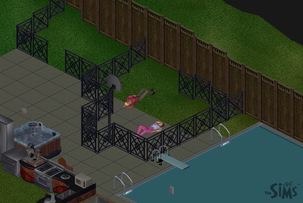
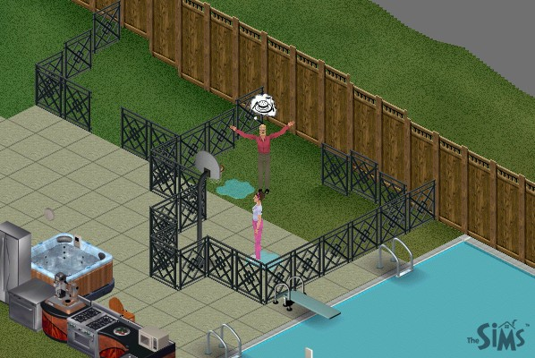
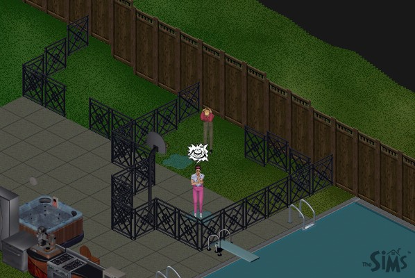
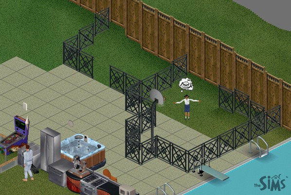
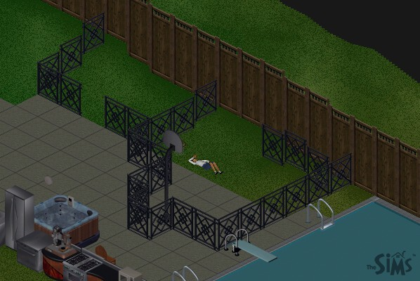

|
The Death of The Sims Part 2
 |
Just as expected, if you starve Sims, they will pass out from exhaustion. |
 |
Although the game doesn't simulate smell, I'm sure the cage was starting to stink at this point, with everyone peeing their pants all the time. |
 |
You have to give credit to the programmers. They really gave the Sims the ability to express their frustration. |
 |
The more he killed, the lower his values became. He at first was just killing adults, but when the adults start to run out, he turned to their orphaned children. |
 |
An interesting thing to remember for later is that there are two age groups of children. The older ones (like this one) can come and go at will. The younger ones won't leave the house except for school. We'll take care of them later. |
Next Page
darkmage@gmail.com
All images and content are ©2000 Jason L. Snowden or
copyrighted by their respective companies
|